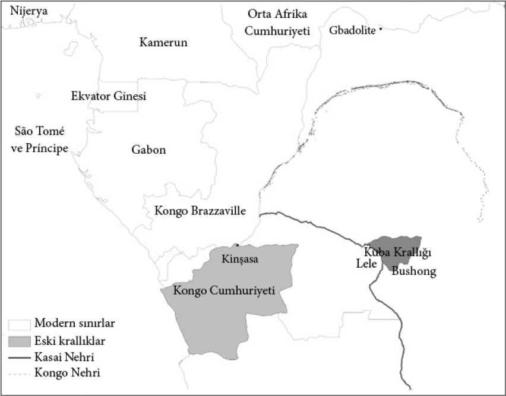

2

İşe yaramayan kuramlar
Mevcut durum
Kitabımızın odağını, dünyadaki eşitsizliğin ve ayrıca bu eşitsizliğin içerdiği göze çarpan bazı yaygın örüntülerin açıklanması oluşturuyor. Uzun vadeli ekonomik büyüme gösteren ilk ülke İngiltere’dir –ya da Büyük Britanya; ve hatta 1707’de İngiltere, Galler ve İskoçya’nın birleştiği bilindiği için genellikle yalnızca Britanya. Büyüme, teknolojideki büyük yeniliklere dayanan ve bu yeniliklerin sınai uygulamalarıyla kök salan Sanayi Devrimi’yle 18. yüzyılın ikinci yarısında ağır ağır başladı. İngiltere’deki sanayileşmeyi kısa zamanda Batı Avrupa’nın büyük kısmında ve Birleşik Devletler’de görülen sanayileşme izledi. Ayrıca İngiliz refahı, İngiltere’nin kolonileri olan Kanada, Avustralya ve Yeni Zelanda’da da hızlı bir biçimde yayıldı. Günümüzün en zengin 30 ülkesini gösteren bir listede bu ülkeler de yer alacaktır; ilaveten Japonya, Singapur ve Güney Kore de. Bu son üç ülkede görülen yüksek refah düzeyi, Tayvan ve ardından Çin de dahil olmak üzere, yakın zamanda hızlı büyüme yaşayan birçok Doğu Asya ülkesinde rastlanan daha yaygın bir kalıba bağlı olarak ortaya çıkmıştır.
Dünya gelir dağılımının en alt kısmı da en üst kısmı kadar keskin ve özgün bir tablo çizer. Bu kez en yoksul 30 ülkeyi gösteren bir liste yaparsanız bu ülkelerin neredeyse tamamını Sahra-altı Afrika’da bulursunuz. Onlara Afganistan, Haiti ve Nepal gibi, Afrika’da olmamalarına karşın ileride açıklayacağımız aynı kritik özelliklere sahip ülkeler eşlik eder. 50 yıl geriye giderseniz en üstte ve en altta yer alan 30 ülkenin çok değişmediğini görürdünüz. Singapur ve Güney Kore en zengin ülkeler arasında yer almazdı ve en alttaki 30’da birkaç farklı ülkeye rastlardınız. Fakat ortaya çıkan genel tablo bugün gördüğümüzle dikkate değer biçimde uyumlu olurdu. 100 ya da 150 yıl geriye gidin, neredeyse aynı ülkeleri aynı gruplarda bulursunuz.
Harita 3, 2008’deki durumu göstermektedir. En koyu renkteki ülkeler kişi başına ortalama gelirin 2 bin doların altında olduğu dünyanın en yoksul ülkeleri. Afrika’nın büyük kısmı, Afganistan, Haiti ve Güneydoğu Asya’nın bazı bölümleri (örneğin Kamboçya ve Laos) bu renkte. Kuzey Kore de bu gruptaki ülkelerden. Beyaz renktekiler ise kişi başına 20 bin dolar ya da daha fazla ortalama gelire sahip en zengin ülkeler. İşte olağan şüpheliler: Kuzey Amerika, Batı Avrupa, Avustralya ve Japonya.
Bir başka ilginç örüntü ise Amerika’da kendini gösterir. Bir liste yapıp kıtadaki ülkeleri en zenginden en yoksula doğru sıralayın. Listenin başında Birleşik Devletler ve Kanada’nın olduğunu, onları Şili, Arjantin, Brezilya, Meksika ve Uruguay’ın ve petrol fiyatlarına bağlı olarak belki bir de Venezuela’nın takip ettiğini görürsünüz. Onların ardından Kolombiya, Dominik Cumhuriyeti, Ekvador ve Peru gelir. En altta Bolivya, Guatemala ve Paraguay’ı kapsayan bir başka müstakil ve çok daha yoksul grup vardır. 50 yıl geri gidin aynı sıralamayla karşılaşırsınız. 100 yıl gidin; değişen bir şey olmaz. 150; yine aynı. Dolayısıyla, mesele yalnızca Birleşik Devletler ve Kanada’nın Latin Amerika’dan daha zengin olması değildir; ayrıca Latin Amerika’da da zengin ve yoksul ülkeler arasında belirgin ve süreklik gösteren bir ayrım vardır.
Dikkate değer son bir örüntü de Ortadoğu’dan. Burada da Suudi Arabistan ve Kuveyt gibi, gelir düzeyi ilk 30’a giren ülkelerin gelir düzeylerine yakın, petrol zengini ülkelerle karşılaşırız. Gerçi petrol fiyatları düşse onların durumu da hızla gerilerdi. Mısır, Ürdün ve Suriye gibi çok az petrolü olan ya da hiç petrolü olmayan ülkeler Guatemala ya da Peru’nunkine benzer bir gelir düzeyinde kümelenirler. Petrol olmadan Ortadoğu ülkeleri de Sahra-altı Afrika ülkeleri kadar değilse bile Orta Amerika ve And ülkeleri kadar yoksuldur.
Bugün etrafımızdaki zenginlik örüntülerinde pek çok süreklilik görsek de bu örüntüler değişmez nitelikte değillerdir. Birincisi, daha önce vurguladığımız gibi, günümüzdeki dünya eşitsizliğinin büyük kısmı Sanayi Devrimi’nin ardından 18. yüzyılda ortaya çıktı. 18. yüzyılın ortası gibi geç bir tarihe kadar refah düzeyleri arasındaki açıklığın çok daha az olması bir yana, tarihte daha da geriye gittiğimizde o zamandan beri büyük istikrar gösteren sıralamanın da aynı olmadığını görürüz. Örneğin Amerika’da son 150 yılda gördüğümüz sıralama bundan 500 yıl önce tamamen farklıydı.
Harita 3: 2008 yılında tüm dünyada refah düzeyi.
İkincisi, İkinci Dünya Savaşı’ndan bu yana Doğu Asya’da ve daha yakın zamanda Çin’de olduğu gibi çoğu ülke birkaç on yıl boyunca hızlı büyüme yaşadı. Bunların çoğu daha sonra büyümenin tersine döndüğünü gördü. Örneğin Arjantin 1920’lere kadar 50 yıl boyunca hızla büyüdü ve dünyanın en zengin ülkelerinden biri haline geldi fakat ardından uzun süreli bir inişe geçti. Sovyetler Birliği daha da kayda değer bir örnektir; 1930 ile 1970 yılları arasında gerçekleşen hızlı bir büyüme ve ardından gelen hızlı bir çöküş.
Zenginlikte, yoksullukta ve büyüme örüntülerinde görülen bu muazzam farklılıkları neyle açıklayabiliriz? Neden Batı Avrupalı ülkeler ve onların Avrupalı yerleşimcilerle dolu kolonileri 19. yüzyılda neredeyse hiç geriye bakmadan büyümeye başladılar? Amerika’daki kalıcı eşitsizlik sıralamasını neyle açıklayabiliriz? Neden Doğu Asya’nın büyük kısmı baş döndürücü oranlarda ekonomik büyüme gösterirken Sahra-altı Afrika ve Ortadoğu’daki ülkeler Batı Avrupa’da görülen türden bir ekonomik büyüme göstermede başarısız oldular?
Dünya eşitsizliğinin muazzam boyutlarından, önemli sonuçlar doğurmasından ve son derece belirgin örüntülere sahip olmasından ötürü, genel kabul gören bir açıklaması olduğu düşünülebilir. Fakat öyle değil. Sosyal bilimcilerin zenginlik ve yoksulluğun kökenleri için öne sürdüğü çoğu hipotez hiç de işe yaramıyor ve duruma ikna edici bir açıklama getirmekten uzak.
Coğrafya hipotezi
Dünya eşitsizliğinin nedenlerine ilişkin genel kabul gören bir kuram, zengin ve fakir ülkeler arasındaki büyük ayrımın coğrafi farklılıklar tarafından belirlendiğini ileri süren coğrafya hipotezidir. Afrika, Orta Amerika ve Güney Asya’dakiler gibi çoğu fakir ülke Yengeç Dönencesi ile Oğlak Dönencesi arasındadır. Bunun aksine, zengin ülkeler ılıman kuşakta yer alma eğilimi gösterir. Yoksulluk ve zenginlikteki bu coğrafi yoğunlaşma pek çok sosyal bilimci ve uzmanın kuram ve görüşlerinin başlangıç noktası olan coğrafya hipotezine yüzeysel bir çekicilik kazandırır. Fakat bu durum onu olduğundan daha az yanlış hale getirmez.
Büyük Fransız siyaset felsefecisi Montesquieu daha 19. yüzyıl sonlarında zenginlik ve yoksulluğun coğrafi yoğunlaşmasından söz etti ve tropikal iklimlerdeki insanların tembelliğe eğilimli ve merak duygusundan yoksun olduklarını savundu. Bu nedenle, sıkı çalışmıyorlardı, yenilikçi değillerdi, bu yüzden de fakirdiler. Montesquieu ayrıca, tropikal konumun yalnızca yoksulluğu değil aynı zamanda yaygın despotizm gibi ekonomik başarısızlıkla ilişkili bazı siyasal olguları da açıklayabileceğini öne sürerek tembel insanların despotlar tarafından idare edilmeye eğilimli olduğu yorumunda bulundu.
Sıcak ülkelerin doğası gereği fakir olduğunu ileri süren kuram Singapur, Malezya ve Botsvana gibi ülkelerin yakın dönemdeki ekonomik ilerlemeleriyle çelişse de hâlâ Jeffrey Sachs gibi iktisatçılar tarafından güçlü bir biçimde savunuluyor. Bu görüşün modern versiyonu iklimin çalışma eforu ya da düşünme biçimi üzerindeki doğrudan etkisine değil, iki ilave argümana vurgu yapar: Birincisi, tropikal hastalıklar, özellikle de sıtma, sağlık ve dolayısıyla işgücü verimliliği üzerinde son derece olumsuz sonuçlar doğurur ve ikincisi, tropikal topraklar, verimli tarıma elverişli değildir. Yine de sonuç aynıdır: Ilıman iklimler tropikal ve yarı tropikal iklimlere kıyasla daha avantajlıdır.
Oysa dünya eşitsizliği iklimle, hastalıklarla ya da coğrafya hipotezinin herhangi bir versiyonuyla açıklanamaz. Nogales’i bir düşünün. İki tarafı ayıran iklim, coğrafya ya da çevresel hastalık koşulları değil, Birleşik Devletler-Meksika sınırıdır.
Coğrafya hipotezi Nogales’in kuzeyi ile güneyi arasındaki ya da Kuzey ve Güney Kore arasındaki ya da Berlin Duvarı’nın yıkılmasından önceki Doğu ve Batı Berlin arasındaki farklılıkları açıklayamıyorsa yine de Kuzey ve Güney Amerika arasındaki farklılıkları ya da Avrupa ve Afrika arasındakileri açıklamak için işe yarar bir kuram olabilir mi? Kısaca, hayır.
Tarih, bize iklim ya da coğrafya ile ekonomik başarı arasında basit ya da kalıcı bir bağlantı olmadığını gösteriyor. Mesela, tropiklerin ılıman bölgelerden her zaman daha fakir olageldiği doğru değildir. Önceki bölümde gördüğümüz gibi, Kolomb’un Amerika’yı fethettiği tarihte Yengeç Dönencesi’nin güneyindeki ve Oğlak Dönencesi’nin kuzeyindeki bölgeler, yani bugün Meksika, Orta Amerika, Peru ve Bolivya’nın olduğu topraklar büyük Aztek ve İnka uygarlıklarına ev sahipliği ediyordu. Bu imparatorluklar merkezi ve karmaşık bir siyasal yapıya sahipti; yollar inşa etmiş kıtlıkla mücadele önlemleri almışlardı.
Aztekler hem paraya hem de yazıya sahipti. İnkalar bu kilit teknolojilerin ikisinden de yoksun olmalarına karşın muazzam miktarda bilgiyi quipu denilen düğümlü ipliklere kaydetmişlerdi. Bununla tam bir zıtlık oluşturacak biçimde, zamanında Aztek ve İnkaların yaşadığı, bugünse Birleşik Devletler, Kanada, Arjantin ve Şili’nin bulunduğu bölgenin kuzey ve güneyi, o devirde çoğunlukla bu teknolojilerden yoksun Taş Devri uygarlıklarınca mesken edilmişti. Dolayısıyla, Amerika’nın tropik kuşağı ılıman kuşaktan çok daha zengindi; bu da tropikal yoksulluğa işaret eden “açık gerçeğin” ne açık ne de gerçek olduğunu göstermektedir. Aksine, bölgenin Avrupalıların geldiği dönemdeki durumuna kıyasla Birleşik Devletler ve Kanada’nın daha büyük zenginlikleri tam anlamıyla talihin tersine dönüşünü temsil etmektedir.
Çok açık bir biçimde, bu tersine dönüş coğrafyayla değil, daha önce gördüğümüz gibi, bu bölgelerin sömürgeleştirilme biçimiyle ilgilidir. Ayrıca Amerika’yla sınırlı da değildir. Güney Asya’daki halklar, özellikle de Hint yarımadası ve Çin’dekiler Asya’nın diğer pek çok bölgesinden daha müreffehtiler; hele hele Avustralya ve Yeni Zelanda’da yaşayan, seyrek bir biçimde yerleşmiş, nispeten daha ilkel halklardan. Fakat Güney Kore, Singapur ve Japonya’nın Asya’nın en zengin ülkelerine dönüşmesi ve Avustralya ile Yeni Zelanda’nın refah bakımından neredeyse tüm Asya ülkelerini geride bırakmasıyla bu durum da tersine döndü. Sahra-altı Afrika’da dahi benzer bir tersine dönüş vardı. Yakın zamanda, Avrupa’nın Afrika’yla yoğun temasının başlangıcından önce, Afrika’nın güney bölümü en seyrek yerleşimli ve bölgeleri üzerinde herhangi bir kontrole sahip gelişmiş ülkelere en uzak bölgeydi. Oysa şimdi Güney Afrika, Sahra-altı Afrika’nın en müreffeh uluslarından biri. Daha da eskiye gidersek tropiklerde yine zenginlik görürüz; modern Kamboçya’daki Angkor, Güney Hindistan’daki Vijayangara ve Etiyopya’daki Aksum gibi bazı modern çağ öncesi uygarlıkları, tıpkı modern Pakistan’ın içinde kalan Mohenjo Daro ve Harrapo’daki İndus Vadisi uygarlıkları gibi tropiklerde geliştiler. Böylece tarih, uzun vadede tropikal konumla ekonomik başarı arasında basit bir bağlantı olmadığını neredeyse kuşkuya yer vermeyecek biçimde ortaya koymaktadır.
Tropikal hastalıkların Afrika’da büyük ıstıraba ve yüksek bebek ölüm oranlarına neden olduğu çok açıktır; fakat Afrika’nın fakirliğinin nedeni bu hastalıklar değildir. Hastalık, genellikle yoksulluğun ve onların kökünü kurutmak için gerekli halk sağlığı önlemlerini almakta yetersiz ya da isteksiz hükümetlerin varlığının bir sonucudur. 19. yüzyılda İngiltere de çok sağlıksız bir yerdi; fakat hükümet temiz suya, lağım ve atık suların gerektiği gibi arıtılmasına ve nihayet etkin bir sağlık hizmetine peyderpey yatırım yaptı. İngiltere’nin ekonomik başarısının nedeni sağlıkta ve ortalama yaşam süresinde görülen iyileşme değildi; bunlar ülkenin daha önce yaşadığı siyasal ve ekonomik değişikliklerinin birer ürünüydü. Aynı şey Nogales Arizona için de geçerlidir.
Coğrafya hipotezinin diğer iddiasına göreyse, tropikler fakirdir çünkü tropikal tarım doğası gereği verimsizdir. Bu argüman, tropikal toprağın zayıf olduğunu ve besin maddelerini muhafaza edemediğini savunur ve bu toprakların şiddetli yağmurlarla çok çabuk aşınmasına vurgu yapar. Elbette bu iddia belirli ölçüde haklılık payı taşımaktadır; fakat daha sonra göstereceğimiz gibi, çoğu fakir ülkenin, özellikle de Sahra-altı Afrika’dakilerin, tarımsal verimliliğinin –bir birim topraktan elde edilen tarımsal hasılat– düşük olmasındaki asıl belirleyici faktör toprak kalitesiyle çok az ilgilidir. Daha ziyade toprağın mülkiyet yapısının, hükümetlerin çiftçiler için düzenledikleri teşviklerin ve idaresinde yaşadıkları kurumların bir sonucudur. Ayrıca dünya eşitsizliğinin tarımsal verimlilikteki farklılıklarla açıklanamayacağını da göstereceğiz. Modern dünyada 19. yüzyılda ortaya çıkan muazzam eşitsizlik sınai teknolojilerin ve imalat ürünlerinin dengesiz dağılımından kaynaklandı, tarımsal randımandaki farklılıklardan değil.
Coğrafya hipotezinin bir başka etkili versiyonu çevrebilimci ve evrim biyoloğu Jared Diamond tarafından ileri sürüldü. Diamond 500 önce modern çağın başlangıcındaki kıtalararası eşitsizliğin kökeninin bitki ve hayvan türleri zenginliğinde görülen ve sonrasında tarımsal verimliliği de etkileyen tarihsel farklılıklara dayandığını savundu. Ortadoğu’daki Bereketli Hilal5 gibi bazı bölgelerde, insanların evcilleştirebileceği çok sayıda tür varken, başka yerlerde, örneğin Amerika’da yoktu. Evcilleştirilebilir nitelikte çok sayıda türe sahip olmak, toplumlar için avcı-toplayıcı yaşam biçiminden tarım toplumuna geçişi çok cazip bir hale getiriyordu. Bunun sonucunda tarım, Bereketli Hilal’de Amerika’dan daha önce gelişti. Nüfus yoğunluğu arttı ve bu da iş bölümüne, ticarete, şehirleşmeye ve siyasal gelişime olanak tanıdı. En önemlisi, tarımın baskın olduğu yerlerde teknolojik yenilikler dünyanın başka bölgelerinden çok daha hızlı gerçekleşti. Dolayısıyla, Diamond’a göre, hayvan ve bitki türlerinin mevcudiyetine ilişkin farklılıklar, tarımsal yoğunluğa ilişkin farklılıklar doğurdu; bu da farklı kıtalarda farklı teknolojik değişim ve refah rotalarına yol açtı.
Diamond’ın tezi, odaklandığı soruna yönelik güçlü bir yaklaşım olsa da modern dünyadaki eşitsizliği açıklayacak şekilde genişletilemez. Örneğin, Diamond İspanyolların daha uzun tarım geçmişleri ve bunun sonucunda da daha üstün teknolojileri sayesinde Amerika uygarlıkları üzerinde hâkimiyet kurduklarını ileri sürüyor. Fakat bu durumda eski Aztek ve İnka topraklarında yaşayan Meksikalı ve Peruluların neden fakir olduğunu açıklamamız gerekir. Buğday, arpa ve atlarının olması İspanyolları İnkalardan daha zengin kılmış olabilir, fakat aralarındaki gelir farkı çok büyük değildi. Bir İspanyol’un ortalama geliri muhtemelen bir İnka yurttaşının gelirinin iki katından azdı. Diamond’ın tezi, İnkaların kendi başlarına geliştiremeyecekleri türlerle ve teknolojilerle karşı karşıya gelir gelmez hızla İspanyolların yaşam standartlarını yakalamaları gerekeceği anlamına geliyor. Oysa böyle bir şey olmadı. Aksine, 19. ve 20. yüzyılda İspanya ve Peru arasında çok daha büyük bir gelir farkı oluştu. Bugün ortalama bir İspanyol, ortalama bir Perulu’dan altı kat daha zengindir. Bu gelir farkı modern sınai teknolojilerin dengesiz dağılımıyla yakından ilgilidir fakat bunun hayvan ve bitki evcilleştirme potansiyeliyle ya da İspanya ve Peru’nun tarımsal randımanlarında görülen özgün farklılıklarla ilişkisi gayet sınırlıdır.
İspanya –gecikmeli de olsa– buhar gücünü, demiryolunu, elektriği, makineleşmeyi ve fabrika üretimini hayata geçirirken Peru’da böyle olmadı; olduysa da çok yavaş ve kusurlu bir biçimde oldu. Teknoloji düzeyleri arasındaki bu uçurum bugün de varlığını koruyor ve yeni teknolojilerin, özellikle de enformasyon teknolojisiyle ilgili olanların, birçok gelişmiş ülkede ve bazı hızla gelişen ülkelerde daha fazla büyümeyi teşvik etmesiyle daha da artıyor. Diamond’ın tezi bu hayati öneme sahip teknolojilerin neden geliri dünya geneline yayıp dengelemediğini söylemediği gibi, 500 yıl önce aynı uygarlığın parçası olmalarına karşın bugün Nogales’in kuzey yarısının neden güney yarısından çok daha zengin olduğunu da açıklamıyor.
Nogales’in tarihi, Diamond’ın tezinin uyarlanmasındaki bir başka büyük problemin altını çiziyor: Daha önce gördüğümüz gibi, 1532’de İnka ve Aztek imparatorluklarının ne gibi dezavantajları olursa olsun Peru ve Meksika, kıtanın sonradan Birleşik Devletler ve Kanada haline gelen kısımlarından hiç şüphesiz daha müreffehti. Kuzey Amerika elbette Sanayi Devrimi’nin teknoloji ve ilerlemelerini şevkle benimsediği için daha müreffeh hale geldi. Giderek eğitimli bir nüfusun oluşması ve demiryolu ağı Büyük Düzlükler’i6 aşarak genişlemesi Güney Amerika’daki duruma tam bir tezat teşkil ediyordu. Bu durum Amerika’nın coğrafi zenginlikleri arasındaki farklılıklara işaret ederek açıklanamaz; aksine, Güney Amerika’nın zenginlikleri daha fazladır.
Modern dünyadaki eşitsizliğin kaynağı teknolojinin dağılımında ve hayata geçirilişindeki dengesizliktir; ancak Diamond’ın tezi bu konuda kayda değer argumanlar içermez. Sözgelimi, tarihçi William McNeill’ı izleyerek, Avrasya’nın doğu-batı hattının ekinlerin, hayvanların ve teknik yeniliklerin Bereketli Hilal’den Batı Avrupa’ya yayılmasına olanak sağladığını, oysa Meksika’da geliştirilen yazının Andlara ve Kuzey Amerika’ya yayılmamasının nedeninin Amerika’nın kuzey-güney hattı olduğunu ileri sürüyor. Fakat kıtaların konumu bugünün dünya eşitsizliğine açıklama getiremez. Afrika’yı ele alalım. Sahra Çölü malların ve fikirlerin Kuzey Afrika’dan Sahra-altı Afrika’ya doğru hareketine önemli bir engel oluştursa da bu üstesinden gelinemez bir durum değildi. Portekizliler ve ardından başka Avrupalılar yelken açarak kıtanın etrafından dolandılar ve bugüne kıyasla gelir farkının çok düşük olduğu bir zamanda bilgi farkının üstesinden geldiler. O tarihten bu yana Afrika Avrupa’yı yakalayamadı; aksine, bugün çoğu Afrika ve Avrupa ülkesi arasında çok daha büyük bir gelir farkı vardır.
Açıklığa kavuşturulması gereken diğer bir konu da Diamond’ın kıtasal eşitsizlik argumanının kıtaların kendi içlerindeki eşitsizliği, yani modern dünya eşitsizliğinin en önemli parçalarından birini açıklamak için yeterli donanıma sahip olmamasıdır. Örneğin, Avrasya kara parçasının konumu, İngiltere’nin, yeniden icat etmek zorunda kalmadan Ortadoğu’nun yeniliklerinden faydalanmayı nasıl başardığını açıklayabilse de Sanayi Devrimi’nin neden Londra’da gerçekleşip, sözgelimi, Moldova’da gerçekleşmediğini açıklayamaz. Buna ek olarak, bizzat Diamond’ın belirttiği gibi, Çin de Hindistan da gayet zengin bitki ve hayvan gruplarından ve Avrasya’nın konumundan fazlasıyla yararlandılar. Oysa bugün dünyadaki yoksul insanların büyük kısmı bu iki ülkede yaşamaktadır.
Aslında, Diamond’ın tezinin kapsamını anlamanın en iyi yolu, konuyu kendi bağımsız değişkenleri bakımından ele almaktır. Harita 4, modern domuzun atası Sus scrofa ve modern ineğin atası yaban öküzü türlerinin dağılımıyla ilgili verileri göstermektedir. Her iki tür de Avrasya’da ve hatta Kuzey Afrika’da geniş bir dağılım göstermektedir. Harita 5 ise Oryza sativa gibi bazı evcilleştirilmiş modern tahılların yabani atalarının, Asya kültür pirincinin atasının ve modern buğday ve arpanın atalarının dağılımını göstermektedir. Haritadan da anlaşıldığı gibi, arpa ve buğdayın ataları uzun bir kavis boyunca Levant’tan (Doğu Akdeniz) İran, Afganistan’ın iç bölgeleri ve “istanlar” kümesine (Türkmenistan, Tacikistan ve Kırgızistan) kadar dağılırken pirincin vahşi atası Batı ve Güneybatı Asya’da geniş bir alanda dağılım göstermektedir. Tüm bu eski türler Avrasya’nın çoğu bölgesinde mevcuttur. Fakat bu türlerin geniş dağılımları Avrasya’daki eşitsizliğin türlerin sıklığına dayalı bir kuramla açıklanamayacağını ortaya koymaktadır.
Harita 4: Modern domuzun atası Sus scrofa ve modern ineğin atası yabanöküzü-Auroch
türlerinin dağılımıyla ilgili veriler.
Coğrafya hipotezi tarih boyunca zenginliğin kökenlerini açıklamak için yetersiz kaldığı ve iddiasında büyük ölçüde yanlış olduğu gibi, bu bölümün başında bahsettiğimiz durumu açıklayabilmekten de uzaktır. Amerika’daki gelir hiyerarşisi ya da Avrupa ve Ortadoğu arasındaki keskin ve uzun vadeli farklılıklar gibi süreklilik gösteren tüm örüntülerin değişmeyen coğrafyayla açıklanabileceği ileri sürülebilir. Ama böyle değildir. Daha önce gördüğümüz gibi, Amerika’daki örüntülerin coğrafi faktörlere dayanması çok uzak bir ihtimaldir. 1492’den önce Kuzey Amerika’ya ya da Arjantin ve Şili gibi bölgelere kıyasla daha üstün teknolojiye ve yaşam standartlarına sahip olan uygarlıklar Meksika’nın merkezindeki vadide, Orta Amerika’da ve Andlar’da bulunan uygarlıklardı. Coğrafya aynı kalırken değişmeden kalırken Avrupalı sömürgecilerin dayattığı kurumlar “talihi tersine çevirdi”.
Harita 5: Yabani pirinç, buğday ve arpanın tarihsel dağılımı.
Coğrafya benzer sebeplerden ötürü Ortadoğu’nun yoksulluğunu açıklamaktan da uzaktır. Neticede Neolitik Devrim’de dünyaya öncülük eden Ortadoğu’ydu ve ilk şehirler günümüzdeki Irak’ta ortaya çıkmıştı. Demir ilk kez Türkiye’de izabe edildi ve Ortadoğu Ortaçağ’a dek teknolojik bakımdan dinamik bir bölgeydi. 5. bölümde göreceğimiz gibi, Neolitik Devrim’in dünyanın bu bölgesinde ortaya çıkmasını sağlayan Ortadoğu’nun coğrafyası değildi; ayrıca Ortadoğu’yu fakirleştiren de coğrafyası değildi. Bunun nedeni Osmanlı İmparatorluğu’nun genişleyip güçlenmesiydi ve bugün Ortadoğu’nun fakir kalmasının nedeni de bu imparatorluğun kurumsal mirasıdır.
Son olarak, coğrafi etkenler yalnızca bugün dünyanın birçok bölgesinde karşımıza çıkan farklılıkları açıklamak için değil, ayrıca Japonya ve Çin gibi pek çok ülkenin neden önce uzun süreli durgunluk yaşayıp ardından bir hızlı büyüme sürecine girdiklerini açıklamak için de yetersizdir. Başka ve daha iyi bir kurama ihtiyacımız var.
Kültür hipotezi
Genel kabul görmüş diğer bir kuram olan kültür hipotezi, zenginliği kültürle ilişkilendirir. Kültür hipotezi, tıpkı coğrafya hipotezi gibi, en azından Protestan Reformu’nun ve kamçıladığı Protestan ahlakının Batı Avrupa’nın modern sanayi toplumunun yükselişini kolaylaştıran anahtar bir rol oynadığını öne süren büyük Alman sosyoloğu Max Weber’e kadar götürülebilecek seçkin bir silsileye sahiptir. Kültür hipotezi artık temellerini yalnızca dine dayandırmıyor, başka inançlara, değerlere ve ahlak anlayışlarına da vurgu yapıyor.
Alenen dile getirilmesi siyaseten doğru olmasa da, çoğu insan hâlâ Afrikalıların düzgün bir iş ahlâkından yoksun oldukları, büyüye-büyücülüğe inanmaya devam ettikleri ya da Batı’nın yeni teknolojilerine ayak diredikleri için fakir olduklarını düşünmeyi sürdürüyor. Ayrıca çoğu kişi, insanlarının hem doğaları gereği sefih ve meteliksiz hem de “İber” ya da “mañana”7 kültüründen mustarip olmaları nedeniyle Latin Amerika’nın asla zengin olamayacağına da inanıyor. Elbette, bugün Çin, Hong Kong ve Singapur’daki büyümenin lokomotifi olarak Çin’deki iş ahlakı göklere çıkarılsa da zamanında çoğu kişi Çin kültürünün ve Konfüçyus değerlerinin ekonomik büyümeye ters düştüğünü düşünüyordu.
Kültür hipotezi dünya eşitsizliğini anlamada işe yarar mı? Hem evet, hem de hayır. Kültürle ilişkili sosyal normlar önem taşıdıkları, değiştirilmesi zor oldukları ve bazen de bu kitabın dünya eşitsizliğine getirdiği açıklamayı yani kurumsal farklılıkları destekledikleri için, evet. Ancak kültürün din, ulusal ahlak, Afrika ya da Latin değerleri gibi sıklıkla vurgulanan yönleri bu noktaya nasıl geldiğimizi ve dünya eşitsizliğinin neden süreklilik gösterdiğini anlamak için hiç de önem taşımadığı için, büyük ölçüde hayır. İnsanların birbirlerine ne ölçüde güvendikleri ya da işbirliği yapabildikleri gibi diğer hususlar da önem taşır ancak bunlar çoğunlukla kurumların ürünüdür, bağımsız bir nedenin değil.
Nogales örneğine dönelim. Daha önce belirttiğimiz gibi, çitin kuzey ve güney yanındaki pek çok kültürel özellik aynıdır. Yine de uygulamalarda, norm ve değerlerde bazı belirgin farklılıklar olabilir fakat bunlar iki bölgenin izledikleri farklı gelişim rotalarının nedenleri değil, sonuçlarıdır. Örneğin, yapılan anketlerde Meksikalılar birbirlerine güvendiklerini, genellikle Birleşik Devletler yurttaşlarından daha az telaffuz ederler. Fakat Meksikalıların yaşadığı güven eksikliği, hükümetlerinin uyuşturucu kartellerini yok etmeyi başaramadığı ya da işlevsel ve tarafsız bir hukuk sistemi oturtamadığı dikkate alındığında şaşırtıcı değildir. Aynı şey bir sonraki bölümde ele alacağımız Kuzey ve Güney Kore için de geçerlidir. Güney, dünyanın en zengin ülkelerinden biriyken Kuzey periyodik kıtlıklarla ve gurur kırıcı bir yoksullukla pençeleşmektedir. Bugün “kültür” Kuzey ve Güney arasında çok fark etse de bu iki ülkenin ekonomik geleceklerinin ayrışmasında hiçbir rol oynamamıştır. Kore yarımadası uzun bir ortak geçmişe sahiptir. Kore Savaşı’ndan ve ülkenin 38. paralel üzerinde ikiye ayrılmasından önce yarımada dil, etnik köken ve kültür bakımından benzeri görülmemiş ölçüde homojendi. Tıpkı Nogales’de olduğu gibi, burada da belirleyici olan sınırdı. Kuzey’de farklı kurumlar getiren, farklı teşvikler sağlayan, farklı bir rejim vardı. Bu nedenle, Nogales’i ya da Kore’yi ikiye ayıran sınırın kuzey ve güney yanındaki herhangi bir kültürel farklılık, zenginlik farkının nedeni değildir; aksine, sonucudur.
Peki, ya Afrika ve Afrika kültürü? Tarihsel olarak, Sahra-altı Afrika dünyanın çoğu bölgesinden daha fakirdi ve onun eski uygarlıkları tekerlek, yazı (Etiyopya ve Somali hariç) ya da sabandan yoksundu. Bu teknolojiler 19. yüzyılın sonu ve 20. yüzyıl başında resmi Avrupa sömürgeciliğinin başlangıcından önce yaygın olarak kullanılmasa da, Afrika toplumları onları çok daha önce tanımıştı. Avrupalılar 15. yüzyıl sonlarında batı sahili boyunca yelken açmaya başlamış, Asyalılar ise çok daha erken tarihlerden itibaren mütemadiyen Doğu Afrika’ya deniz yolculukları düzenlemişlerdi.
Bu teknolojilerin neden benimsenmediğini, modern Demokratik Kongo Cumhuriyeti’ne ismini veren Kongo Nehri’nin ağzındaki Kongo Krallığı’nın tarihine bakarak anlayabiliriz. Harita 6, Kongo’nun ve ilerde ele alacağımız bir diğer önemli Orta Afrika ülkesi olan Kuba Krallığı’nın yerini göstermektedir.
Kongo, Portekiz’le ilk kez 1483’te denizci Diogo Cão’nun ziyaretinin ardından yoğun temasa geçti. O tarihte Kongo, Afrika standartlarına göre yüksek ölçüde merkezi bir yönetime sahipti ve başkenti Mbanza 60 bin kişilik nüfusuyla neredeyse Portekiz’in başkenti Lizbon’la aynı büyüklükteydi, 1500’de yaklaşık 50 bin kişilik bir nüfusu olan Londra’dan ise daha büyüktü. Kongo Kralı Nzinga a Nkuwu Katolikliğe geçti ve I. João ismini aldı. Sonrasında Mbanza’nın ismi de São Salvador olarak değiştirildi. Portekiz sayesinde Kongolular tekerlek ve sabanla tanıştı, hatta Portekizliler 1491 ve 1512’de kurdukları tarım misyonlarıyla bu teknolojilerin hayata geçirilmesini teşvik etti. Ancak tüm bu girişimler başarısızlıkla sonuçlandı. Yine de, Kongoluların genel anlamda modern teknolojileri tamamen reddettikleri söylenemez. Batı’nın saygıdeğer yeniliklerinden birini, tüfeği gayet çabuk benimsediler. Bu yeni ve güçlü aracı pazar teşviklerine karşılık vermek için, yani köle ele geçirip ihraç etmek için kullandılar. Bu noktada Afrika değerlerinin ya da kültürünün yeni teknolojileri ve uygulamaları benimserken engel teşkil ettiğine dair hiçbir emare yoktur. Kongoluların Avrupalılarla teması arttıkça onların başka uygulamalarını da benimsediler: okuryazarlık, kıyafet tarzı ve ev tasarımı. 19. yüzyılda başka pek çok Afrika toplumu, üretim biçimlerini değiştirmek suretiyle Sanayi Devrimi’nin yarattığı artan ekonomik fırsatların avantajlarından yararlandı. Batı Afrika’da palm yağı ve yerfıstığı ihracatına dayalı hızlı bir ekonomik gelişim söz konusuydu; Afrika’nın güneyindeki kabileler Güney Afrika’daki Rand’in hızla genişleyen sanayi ve maden bölgelerine ihracata başladılar. Yine de, bu umut vaat eden ekonomik deneyimler Afrika kültürü ya da kendi çıkarları doğrultusunda hareket eden sıradan Afrikalılar tarafından değil, ilk önce Avrupa sömürgeciliği ve ardından bağımsızlık sonrası Afrika hükümetleri tarafından yok edildi.

Harita 6: Kongo Krallığı, Kuba Krallığı, Bushong ve Lele.
Kongoluların ileri teknolojileri benimsememiş olmalarının asıl nedeni, bunu yapmak için hiçbir teşviklerinin olmamasıydı. Elde ettikleri tüm hasılanın, Katolikliğe geçsin ya da geçmesin, mutlak güce sahip kral tarafından el konulup vergilendirilmesi gibi çok yüksek bir riskle yüz yüzeydiler. Aslına bakılırsa tehlikede olan yalnızca mülkleri değildi. Kendileri de tehlike altındaydı. Pek çoğu yakalanıp köle olarak satıldı; bunun uzun vadede verimliliği artırmak için yatırım yapmayı teşvik edecek bir ortam olduğunu söylemek biraz güç. Kral ne saban kullanımının yaygınlaşması için teşvik sağlıyordu ne de tarımsal verimliliği artırmak gibi bir önceliği vardı; köle ihraç etmek çok daha kârlıydı.
Bugün Afrikalıların birbirlerine duydukları güvenin dünyanın başka bölgelerindeki insanlardan daha az olduğu doğru olabilir. Fakat bu, Afrika’da hem insan hem de mülkiyet haklarına alttan alta zarar veren kurumların uzun geçmişinin bir ürünüdür. Yakalanıp köle olarak satılma ihtimali hiç şüphesiz Afrikalıların başkalarına olan güvenini tarihsel anlamda etkilemiştir.
Ya Max Weber’in Protestan ahlakı? Nüfusun büyük çoğunluğunu Protestanların oluşturduğu ülkelerin, örneğin Hollanda ve İngiltere’nin, modern çağın ilk büyük ekonomik başarılarına imza atmalarına karşın din ve ekonomik başarı arasındaki ilişki çok sınırlıdır. Çoğunluğu Katoliklerden oluşan Fransa 19. yüzyılda hızla Hollandalıların ve İngilizlerin başarısını taklit etmesi bir yana, bugün İtalya da bu ülkelerden herhangi biri kadar müreffehtir. Uzak Doğu’ya baktığınızda ise Doğu Asya’nın başarılarından hiçbirinin Hıristiyan dininin hiçbir biçimiyle alakası olmadığını görürsünüz; dolayısıyla orada da Protestanlıkla ekonomik başarı arasında özel bir ilişki olduğunu gösterecek pek bir şey yoktur.
Gelin, kültür hipotezi meraklılarının gözde bölgelerinden birine, Ortadoğu’ya göz atalım. Ortadoğu çoğunlukla Müslüman ülkelerden oluşur ve daha önce belirttiğimiz gibi, bunlar arasında petrolü olmayanlar çok fakirdir. Petrol üreticileri zengindir fakat bu beklenmedik zenginlik Suudi Arabistan ve Kuveyt’te çok yönlü modern ekonomilerin oluşmasına yol açmamıştır. Peki, bu gerçekler din faktörünün önem taşıdığını göstermez mi? Makul görünmesine karşın bu arguman da doğru değildir. Evet, Suriye ve Mısır gibi ülkeler fakirdir ve nüfuslarının büyük çoğunluğu Müslümandır. Fakat bu ülkeler zenginliğin oluşumunda çok daha fazla önem taşıyan başka konularda da sistematik farklılıklar gösterirler. Her şeyden önce hepsi de gelişimlerini yoğun bir biçimde ve olumsuz yönde şekillendiren Osmanlı İmparatorluğu’nun eski eyaletleriydi. Osmanlı idaresinin çöküşünün ardından Ortadoğu, yine, gelişimlerinin önüne set çeken İngiliz ve Fransız sömürge imparatorluklarının hâkimiyetine geçti. Bağımsızlıklarının ardından büyük ölçüde eski sömürge dünyasının kurallarına göre hareket ederek hiyerarşik, otoriter siyasal rejimler kurdular. Bu rejimlerin birkaç siyasal ve ekonomik kurumu, ileride tartışacağımız gibi, ekonomik başarının elde edilmesinde hayati bir önem taşıyordu. Bu gelişim çizgisinde büyük ölçüde Osmanlı ve Avrupa hâkimiyeti tarihi belirleyici oldu. Ortadoğu’da İslam dini ve yoksulluk arasındaki ilişki büyük ölçüde düzmecedir.
Ortadoğu’nun ekonomik rotasını belirlemede kültürel etkenlerden ziyade bu tarihsel olayların oynadığı rol, 1805-1848 yılları arasında Muhammed Ali idaresindeki Mısır gibi, geçici olarak Osmanlı İmparatorluğu’nun ve Avrupalı güçlerin elinden kurtulan Ortadoğu’nun bazı bölgelerinin hızlı bir ekonomik değişim rotası izleyebilmesinde de görülebilir. Muhammed Ali, Napoleon Bonaparte’ın komutasında Mısır’ı işgal eden Fransız kuvvetlerinin geri çekilmesinin ardından yönetime el koydu. O tarihte Osmanlı’nın Mısır bölgesi üstündeki otorite zafiyetinden istifade ederek şu ya da bu şekilde Nasır’ın öncülüğündeki 1952 Mısır Devrimi’ne dek hüküm sürecek kendi hanedanlığını kurmayı başardı. Zorlayıcı nitelikte olmalarına karşın Muhammed Ali’nin reformları devlet bürokrasisini, orduyu ve vergi sistemini modernize ederek Mısır’ın büyümesini sağladı. Ayrıca tarımda ve sanayide de büyüme kaydedildi. Ancak bu modernizasyon süreci ve büyüme Ali’nin ölümüyle son buldu ve Mısır, Batı’nın etkisi altına girdi.
Fakat belki de bu, kültür hakkında fikir yürütmek için yanlış bir yoldur. Belki de önem arz eden kültürel etkenler dinle değil de belirli “ulusal değerlerle” ilişkilidir. Belki de Birleşik Devletler, Kanada ve Avustralya’nın bu kadar zengin olmalarındaki belirleyici etken İngiliz kültürüdür. Başlangıçta cazip görünse de bu fikir de bir işe yaramayacaktır. Evet, Kanada ve Birleşik Devletler İngiliz kolonileriydi; fakat Sierra Leone ve Nijerya da öyle. Eski İngiliz kolonilerinin refah düzeylerinde görülen çeşitlilik, dünyanın geri kalanında olduğu kadar büyüktür. Dolayısıyla Kuzey Amerika’nın başarısının nedeni İngiliz mirası değildir.
Kültür hipotezinin bir versiyonu daha bulunmaktadır: Belki de asıl önemli olan İngilizler ile İngiliz olmayanlar karşıtlığı değil, Avrupalılar ile Avrupalı olmayanlar karşıtlığıdır. Acaba Avrupalılar iş ahlakları, yaşam görüşleri, Yahudi-Hıristiyan değerleri ya da sahip oldukları Roma mirası nedeniyle bir biçimde daha mı üstündürler? Nüfusun büyük çoğunluğunu Avrupa kökenli halkların oluşturduğu Batı Avrupa ve Kuzey Amerika’nın dünyanın en müreffeh bölgesi olduğu bir gerçektir. Belki de bu zenginliğin nedeni –ve kültür hipotezinin son kalesi– Avrupa’nın üstün kültür mirasıdır. Yazık ki, kültür hipotezinin bu versiyonu da açıklayıcı olmaktan en az diğerleri kadar uzaktır. Kanada ve Birleşik Devletler nüfusuna kıyasla Arjantin ve Uruguay nüfusunun daha büyük bölümü Avrupa kökenlidir; fakat bu ülkelerin ekonomik performansı tatminkâr olmaktan çok uzaktır. Oysa Japonya ve Singapur’daki Avrupa kökenli yerleşimciler hiçbir zaman bir tutamdan fazla olmamıştır fakat Batı Avrupa’nın pek çok ülkesi kadar müreffehtirler.
Ekonomik ve siyasal sisteminin çoğu eksik yönlerine rağmen Çin son 30 yılın en hızlı büyüyen ülkesidir. Çin’de Mao Zedung’un ölümüne kadarki yoksulluğun Çin kültürüyle hiçbir ilgisi yoktu; bu yoksulluk Mao’nun ekonomiyi örgütleme ve siyaseti idare etmede kullandığı feci yöntemden kaynaklanıyordu. 1950’lerde Büyük İleri Atılım’ı, kitlesel açlığa ve kıtlığa yol açan sert bir sanayileşme politikasını benimsedi. 1960’larda entelektüellere, eğitimli insanlara; yani partiye bağlılığından şüphe duyulan herkese kitlesel olarak zulmedilmesine yol açan Kültür Devrimi’ni başlattı. Bu da korkuya, toplumun yetenek ve kaynaklarında büyük bir kayba yol açtı. Aynı şekilde, Çin’in günümüzdeki büyümesinin de Çin değerleriyle ya da Çin’deki kültürel değişimle hiçbir ilgisi yoktur; Mao Zedung’un ölümünün ardından yavaş yavaş sosyalist ekonomik politikaları ve kurumları terk eden Deng Xiaoping ve yandaşlarının önce tarımda ardından sanayide uyguladığı reformların zincirlerinden kurtardığı ekonomik dönüşüm sürecinin bir sonucudur.
Tıpkı coğrafya hipotezi gibi, kültür hipotezi de yetersizdir. Elbette Birleşik Devletler ve Latin Amerika arasında inançlar, kültürel tavırlar ve değerler bakımından farklılıklar vardır; fakat tıpkı Nogales Arizona ve Nogales Sonora arasındaki ya da Güney ve Kuzey Kore arasındaki farklılıklar gibi, bu farklılıklar da iki yerin farklı kurumlarından ve kurumsal geçmişlerinden kaynaklanmaktadır. “İspanyol” ya da “Latin” kültürünün İspanya İmparatorluğu’nu nasıl şekillendirdiğini vurgulayan kültürel etkenler, Latin Amerika içindeki farklılıklara –mesela neden Arjantin ve Şili’nin Peru ve Bolivya’dan daha müreffeh olduğuna– açıklama getiremez. Kültürel argumanların diğer biçimleri de –mesela çağdaş yerel kültürleri vurgulayanlar– aynı ölçüde kötüdür. Bugün Peru ve Bolivya’ya kıyasla Arjantin ve Şili’deki yerlilerin sayısı daha azdır. Bu gerçeğe rağmen yerel kültüre dayalı bir açıklama da işe yaramayacaktır. Kolombiya, Ekvador ve Peru benzer gelir düzeylerine sahiptir; fakat Kolombiya’da çok az yerli yaşarken Ekvador ve Peru’daki yerlilerin sayısı çoktur. Son olarak, genellikle yavaş bir değişim gösteren kültürel tavırların Doğu Asya ve Çin’de görülen mucizevi büyümeye tek başına yol açmaları pek mümkün değildir. Kurumlar da direngendir fakat ileride göreceğimiz gibi belirli koşullar altında çok da hızlı değişirler.
Cehalet hipotezi
Bazı ülkelerin zengin bazılarınınsa yoksul olmalarının nedenine ilişkin son popüler kuram, dünya eşitsizliğinin nedenini insanların ya da yöneticilerin fakir ülkeleri nasıl zengin hale getireceklerini bilmemesine bağlayan cehalet hipotezidir. Bu görüş, İngiliz iktisatçı Lionel Robbins tarafından 1935’te ileri sürülen, “Ekonomi, insan davranışını alternatif kullanım alanlarına sahip kısıtlı araçlar ile amaçlar arasındaki ilişki olarak ele alan bir bilimdir” şeklindeki ünlü tanımdan esinlenen çoğu iktisatçı tarafından kabul görür.
Bu durumda kolaylıkla iktisadın kısıtlı araçların toplumsal amaçları karşılamak için nasıl en iyi şekilde kullanılabileceğine odaklanması gereken bir bilim olduğu sonucuna varılabilir. Gerçekten de, “İlk Refah Kuramı” denilen, iktisadın en ünlü kuramsal çıkarımı, kaynakların bir “piyasa ekonomisi” içinde tahsis edilmesinin ekonomik bakımdan toplum yararına görüldüğü koşulları tanımlar. Bir piyasa ekonomisi, tüm birey ve kuruluşların istedikleri her türlü ürün ve hizmeti özgürce ürettiği, alıp sattığı durumu ifade etmek için kullanılan bir soyutlamadır. Bu koşullar mevcut değilse bir “piyasa başarısızlığı” söz konusudur. Piyasa başarısızlıkları çözülmedikçe ülkenin daha da fakir hale gelmesi muhtemel olduğundan bu tür başarısızlıklar bir dünya eşitsizliği kuramına temel oluştururlar. Cehalet hipotezi, yoksul ülkelerin çok sayıda piyasa başarısızlığı olduğu için, iktisatçı ve siyaset adamları bu başarısızlıklardan nasıl kurtulacaklarını bilmedikleri için ve geçmişte yanlış bir tavsiye izledikleri için yoksul kaldığını ileri sürer. Zengin ülkeler zengindir çünkü daha iyi politikalar üretmiş ve bu başarısızlıkları başarıyla yok etmişlerdir.
Cehalet hipotezi dünya eşitsizliğini açıklayabilir mi? Acaba Batı Avrupalı liderler nispeten daha başarılı olmalarından da anlaşılacağı gibi daha iyi bilgilendirilmiş ya da tavsiye almışlardır da, Afrika ülkeleri kendi liderleri ülkelerini yoksulluğa sürükleyen aynı hatalı yönetim anlayışına eğilim gösterdikleri için mi dünyanın geri kalanından daha fakirdir? Sonuçlarını yanlış kestirdikleri için talihsiz politikalar izlemiş liderlere dair meşhur örnekler olsa da, cehalet dünya eşitsizliğinin en iyi ihtimalle küçük bir bölümüne açıklama getirebilir.
Görünüşe göre, Britanya’dan bağımsızlığını elde etmesinin ardından Gana’da başlayan sürekli ekonomik gerilemenin nedeni, cehalettir. O zamanlar Kwame Nkrumah hükümetinin danışmanlığını yürüten İngiliz iktisatçı Tony Killick, yaşanan problemlerin çoğunu gayet ayrıntılı bir biçimde kayda geçirdi. Nkrumah’ın yetersiz olduğu ortaya çıkan politikaları devlet sanayiini geliştirmeye odaklıydı. Killick şöyle diyor:
Ayakkabı fabrikası [...] hayvan derilerinin nakliyesiyle kuzeydeki et fabrikasını güneydeki (500 milden daha uzakta) bir tabakhaneye (şimdi terk edilmiş durumda) bağlayacaktı; deriler ülkenin merkezinde ve tabakhanenin 200 mil kuzeyindeki Kumasi’de bulunan ayakkabı fabrikasında toplanacaktı. Asıl ayakkabı piyasası Accra metropol bölgesinde olduğundan ayakkabıların bu kez de Güney’e doğru gerisin geri 200 kilometre daha yol kat etmesi gerekecekti.
Killick ölçülü denilebilecek bir biçimde bunun “ayakta kalma kabiliyeti kötü konumlandırılışı nedeniyle zarar gören” bir girişim olduğunu ifade ediyor. Ayakkabı fabrikası, Gana’nın mango yetişmeyen bir bölgesinde kurulan ve üretim miktarı dünya genelindeki toplam talepten fazla olan mango konserveleme tesisinin de aralarında bulunduğu buna benzer pek çok projeden biriydi. Bu akıldışı ekonomik nitelikteki gelişimler seli Nkrumah ya da danışmanlarının kötü ve yanlış bilgilendirilmelerinden ya da doğru iktisat politikaları konusunda cahil olmalarından kaynaklanmıyordu. Yanlarında Killick gibi insanlar vardı ve hatta izlenen politikaların iyi olmadığını bilen Nobel adayı Sir Arthur Lewis’den tavsiye alıyorlardı. Ekonomi politikalarını biçimlendiren asıl etken ise Nkrumah’ın siyasal destek elde etmek ve demokratik olmayan rejimini sürdürmek için bu politikaları kullanmaya ihtiyaç duymasıydı.
Ancak ne Gana’nın bağımsızlık sonrasında gösterdiği hayal kırıklığı yaratan performans ne de ekonominin bariz bir biçimde kötü idare edildiğini gösteren çok sayıda başka örnek, basitçe cehaletle açıklanabilir. Neticede, sorun cehalet olsaydı, iyi niyetli liderler ne tür politikaların yurttaşların gelir ve refahını artırdığını çabucak öğrenir ve bu politikalara yönelirlerdi.
Birleşik Devletler ve Meksika’nın izlediği apayrı iki rotayı ele alalım. Bu eşitsizliğe neden olarak iki ülke liderlerinin cehaletini öne sürmek her şeyden önce mantıksızdır. Sömürgecilik döneminde bu eşitsizliğin tohumlarının atılmasının nedeni John Smith ve Cortés’in bilgi düzeylerinin ya da niyetlerinin farklı olması değildi. Ayrıca 19. yüzyılın sonu, 20. yüzyılın başında Meksika’nın elit kesimi zenginleştirip bedelini toplumun geri kalanına ödetmeyi tercih etmesinin nedeni de, bunun tam aksini yapan Teddy Roosevelt ya da Woodrow Wilson gibi sonraki Birleşik Devletler başkanlarıyla Porfirio Díaz arasındaki bilgi farkı değildi. Daha ziyade, ülkelerin başkanlarının ve elitlerinin yüzleştikleri kurumsal kısıtlamalar arasındaki farklılıklardı. Benzer biçimde, güvence altına alınmamış mülkiyet hakları ve ekonomik kurumlar sayesinde nüfusunun büyük kısmı yoksullaşan ve son yarım yüzyılda durgunlaşan Afrika ülkelerinin liderleri de böyle olmasına izin verdiler, çünkü bunun iyi bir ekonomik yol olduğunu düşündüler. Böyle düşündüler; çünkü yaptıkları yanlarına kâr kalabiliyordu ve bedelini başkalarına ödeterek kendilerini zenginleştirebiliyorlardı ya da bunun iyi bir politika olduğunu, kritik grupların ve elit kesimin desteğiyle iktidarda kalmalarını sağladığını düşünüyorlardı.
1971’deki Gana Başbakanı Kofi Busia deneyimi, cehalet hipotezinin ne denli yanıltıcı olabileceğini ortaya koyar. Busia tehlikeli bir ekonomik krizle yüz yüze kalmıştı. 1969’da iktidara gelmesinin ardından kendinden önceki Nkrumah gibi sürdürülemez bir genişlemeci ekonomik politika izledi, pazarlama komiteleri ve aşırı değerlenmiş döviz kuru sayesinde çeşitli fiyat kontrolleri uyguladı. Busia, Nkrumah’ın rakibi olmasına ve demokratik bir yönetim sürdürmesine karşın ülkesinde benzer nitelikte birçok siyasal kısıtlamayla karşılaştı. Nkrumah gibi onun ekonomi politikaları da “cahilliğinden” ve bu politikaların ekonomi için iyi olduğunu ya da ülkeyi geliştirmenin ideal bir yolu olduğunu düşündüğü için benimsenmedi. Bu politikalar tercih edildi; çünkü bunlar Busia’nın hoşnut tutulması gereken, siyasal bakımdan güçlü gruplara –örneğin kentsel alanlardakilere– kaynak aktarmasına olanak sağlayan politikalardı. Fiyat kontrolleri tarıma baskı yaptı, kentsel alanlardaki seçmen bölgelerine ucuz yiyecek sağladı ve hükümet harcamalarını finanse etmek için gelir oluşturdu. Ancak bu kontroller sürdürülemez nitelikteydi. Gana kısa bir süre sonra bir dizi ödemeler dengesi krizi ve döviz darlığıyla boğuşmaya başladı. Bu ikilemler karşısında, 27 Aralık 1971’de Uluslararası Para Fonu’yla, ağır bir devalüasyon da içeren bir anlaşma imzaladı.
IMF, Dünya Bankası ve tüm uluslararası camia, anlaşmada yer alan reformları uygulaması için Busia’ya baskıda bulundu. Uluslararası kurumlar keyiften pek farkında olmasalar da Busia büyük bir siyasal kumar oynadığını biliyordu. Devalüasyonun doğrudan sonucu Gana’nın başkenti Akra’da baş gösteren ve Yarbay Acheampong komutasındaki ordu Busia’yı devirinceye kadar kontrol altına alınamayan ayaklanma ve hoşnutsuzluk oldu; Acheampong’un ilk işi devalüasyona son vermekti. Cehalet hipotezi, yoksulluk sorununu “çözmek” için hazır bir öneriyle gelmesiyle kültür ve coğrafya hipotezlerinden ayrılır: Eğer cehalet sorunumuz varsa aydınlanmış, bilgili yöneticiler ve siyasetçiler bizi bu durumdan kurtarabilir; doğru tavsiyelerle ve siyasetçileri hangi ekonomi politikasının iyi olduğuna ikna ederek tüm dünyada refah “inşa” edebiliriz. Busia deneyimi, bir kez daha, piyasa başarısızlıklarını azaltacak ve ekonomik büyümeyi teşvik edecek politikaları hayata geçirmenin önündeki asıl engelin siyasetçilerin cehaleti değil, içinde bulundukları toplumun siyasal ve ekonomik kurumlarının onlara sunduğu teşvikler ve getirdikleri kısıtlamalar olduğu gerçeğinin altını çizmektedir.
Cehalet hipotezi hâlâ pek çok iktisatçı arasında ve –neredeyse her şeyi bir yana bırakıp refahı nasıl inşa edeceklerine odaklanan– Batılı siyaset çevrelerinde geniş ölçüde kabul görüyorsa da yalnızca işe yaramayan bir başka hipotezden ibarettir. Ne dünya genelinde refahın kökenlerini ne de etrafımızda olan biteni –örneğin neden Birleşik Devletler ve İngiltere değil de Meksika ve Peru gibi bazı ülkelerin yurttaşlarının çoğunu yoksulluğa sürükleyecek kurum ve politikaları seçtiklerini ya da neden Sahra-altı Afrika’nın neredeyse tamamının ve Orta Amerika’nın büyük bölümünün Batı Avrupa ve Doğu Asya’ya kıyasla bu denli yoksul olduğunu– açıklayabilir.
Ülkelerin kendilerini yoksulluğa mahkûm eden kurumsal örüntülerden kurtulup bir ekonomik büyüme çizgisi tutturmayı başarmaları, cahil liderlerinin bir anda daha bilgili ya da daha az çıkarcı olmalarından ya da daha iyi iktisatçılardan tavsiye almalarından kaynaklanmaz. Örneğin Çin, yoksulluğa ve milyonların açlık çekmesine yol açan ekonomik politikaları terk edip ekonomik büyümeyi teşvik eden politikalara geçiş yapan ülkelerden biridir. Fakat bu, daha sonra detaylı bir biçimde tartışacağımız gibi, Çin Komünist Partisi’nin en sonunda tarım arazilerinin ve sanayinin kolektif mülkiyetinin feci ekonomik teşvikler doğurduğunu anladığı için gerçekleşmedi. Daha ziyade, rakiplerinden daha az çıkarcı olmayan ancak farklı çıkarları ve siyasal hedefleri olan Deng Xiaoping ve yandaşları Komünist Parti’deki güçlü rakiplerini yenilgiye uğrattıkları, partinin liderliğini ve doğrultusunu radikal bir biçimde değiştiren bir siyasal devrime öncülük ettikleri için gerçekleşti. Bu siyasal devrimi önce tarım ve ardından sanayi için piyasa teşvikleri oluşturan ekonomik reformlar izledi. Çin’in komünizmden piyasa teşviklerine geçişini sağlayan daha iyi tavsiyeler ya da ekonominin nasıl işlediğinin daha iyi anlaşılması değildi; siyasetti.
Dünya eşitsizliğini anlamak için öncelikle bazı toplumların neden çok yetersiz ve toplumsal açıdan sakıncalı biçimlerde örgütlendiklerini anlamamız gerektiğini savunacağız. Ülkeler bazen etkili kurumlar hayata geçirmeyi ve zenginliğe erişmeyi de başarırlar; fakat ne yazık ki, bunlar nadiren görülen durumlardır. Çoğu iktisatçı ve siyasetçi “meseleyi doğru anlamaya” odaklanır. Oysa asıl odaklanılması gereken yoksul ülkelerin neden “meseleyi yanlış anladıklarına” açıklama getirmektir. Konuyu yanlış anlamak genellikle ne cehaletle ne de kültürle ilgilidir. İleride göreceğimiz gibi, bu ülkeler iktidardakiler yoksulluğa yol açacak seçimler yaptıkları için yoksuldur. Meseleyi hata ya da cehalet yüzünden değil kasten yanlış anlarlar. Bunu anlamak için iktisadın ve yapılması gerekenleri söyleyen uzman tavsiyelerinin ötesine geçip kararların gerçekte nasıl alındığı, kimin aldığı ve bu insanların neden bu kararları aldığı incelenmelidir. Bu siyasete ve siyasal süreçlere ilişkin bir çalışmadır. İktisat genellikle siyaseti göz ardı eder fakat siyaseti anlamak dünya eşitsizliğini açıklamak için elzemdir. İktisatçı Abba Lerner’ın 1970’lerde belirttiği gibi, “İktisat hallolmuş siyasal problemleri kendine çalışma alanı olarak seçerek Sosyal Bilimlerin Kraliçesi unvanını aldı.”
Zenginliğe ulaşmanın bazı temel siyasal problemleri çözmeye bağlı olduğunu savunacağız. Bunun nedeni tamamen iktisadın siyasal problemleri çözülmüş farz etmesinin dünya eşitsizliği için tatminkâr bir açıklama bulmaya olanak tanımamasıdır. Dünya eşitsizliğinin açıklanması konusunda, farklı türden politikaların ve toplumsal düzenlemelerin ekonomik teşvikleri ve davranışları nasıl etkilediğini anlamak için hâlâ iktisada ihtiyaç vardır. Fakat bunun için siyasete de ihtiyaç vardır.
5. Güneyinde Arabistan çölü, kuzeyinde Doğu Anadolu dağlarının bulunduğu bölge. MÖ 9 bin dolaylarında bölgede yerleşik tarıma ve köy yaşamına geçilmiş, hemen ardından da sulu tarım başlamıştır. (ç.n.)
6. (Great Plains) ABD ve Kanada toprakları üzerinde, Rocky Dağları’nın doğusu boyunca uzanan geniş bozkır alan. (ç.n.)
7. Bir tür “bugünün işini yarına bırakma”, “bugün git yarın gel” anlayışı (yay.n)